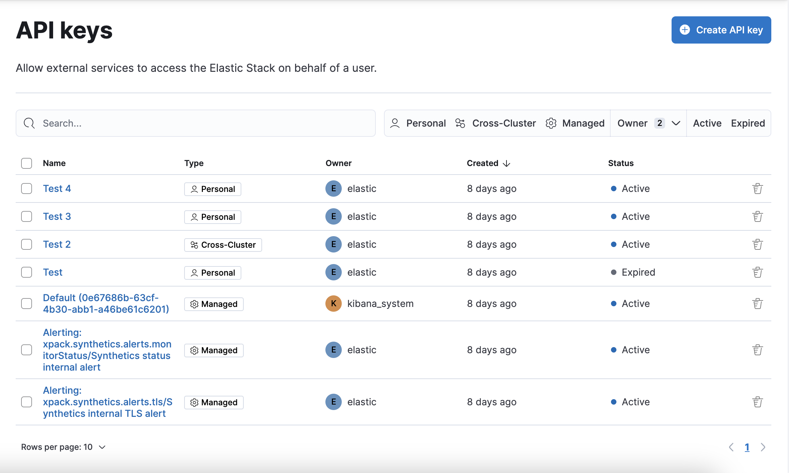
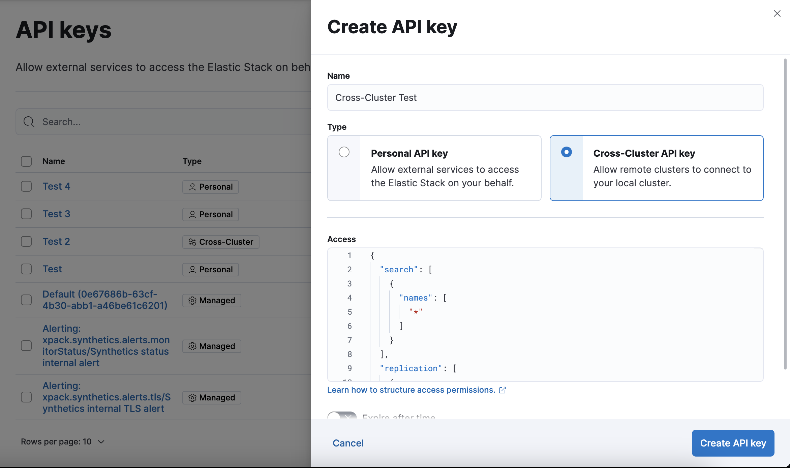

API Keys
editAPI keys are security mechanisms used to authenticate and authorize access to Elasticsearch resources. They ensure that only authorized users or applications interact with Elasticsearch.
For example, if you extract data from an Elasticsearch cluster on a daily basis, you might create an API key tied to your credentials, configure it with minimum access, and then put the API credentials into a cron job. Or you might create API keys to automate ingestion of new data from remote sources, without a live user interaction.
You can use Kibana to manage your different API keys:
- User API key: allows external services to access the Elastic Stack on behalf of a user.
- Cross-cluster API key: allows other clusters to connect to this cluster.
- Managed API key: created and managed by Kibana to run background tasks.
To manage API keys, open the main menu, then click Stack Management > Security > API Keys.

Security privileges
edit-
To use API keys in Kibana, you must have the
manage_security,manage_api_key, or themanage_own_api_keycluster privileges. -
To delete API keys, you must have the
manage_api_keyormanage_own_api_keyprivileges. -
To create or update a user API key, you must have the
manage_api_keyor themanage_own_api_keyprivilege. -
To create or update a cross-cluster API key, you must have the
manage_securityprivilege and an Enterprise license. -
To have a read-only view on the API keys, you must have access to the page and the
read_securitycluster privilege.
To manage roles, open the main menu, then click Stack Management > Security > Roles, or use the Kibana Role Management API.
Create an API key
editTo create an API key, open the main menu, then click Stack Management > Security > API Keys > Create API key.

Refer to the create API key documentation to learn more about creating user API keys.
Refer to the create cross-cluster API key documentation to learn more about creating cross-cluster API keys.
Update an API key
editTo update an API key, open the main menu, click Stack Management > Security > API Keys, and then click on the name of the key. You cannot update the name or the type of API key.
Refer to the update API key documentation to learn more about updating user API keys.
Refer to the update cross-cluster API key documentation to learn more about updating cross-cluster API keys.
View and delete API keys
editThe API Keys feature in Kibana lists your API keys, including the name, date created, and status. If an API key expires, its status changes from Active to Expired.
If you have manage_security or manage_api_key permissions, you can view the API keys of all users, and see which API key was created by which user in which realm.
If you have only the manage_own_api_key permission, you see only a list of your own keys.
You can delete API keys individually or in bulk, but you need the manage_api_keys or manage_own_api_key privileges.